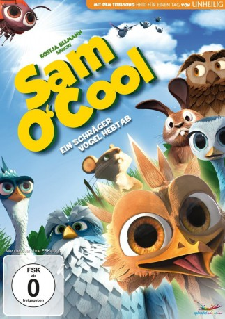

#10268 Sam O'Cool - Ein schräger Vogel hebt ab!
Alternativ: Yellowbird (Englischer Titel)
 
 IMDB-Wertung: 5.5 / 10
IMDB-Wertung: 5.5 / 10  Metascore: 0
Metascore: 0 
Im Herbst, gerade als es Zeit wird, den kalten Wintermonaten Richtung Süden zu entfliehen, wird Darius, weiser Führer eines Vogelschwarms, von einer hungrigen Katze tödlich verwundet. Da weder seine engsten Vertrauten noch irgendein anderes Mitglied des Schwarms bei ihm sind, bleibt Darius nichts anderes übrig, als sein Wissen und seine Routenplanung einem fremden Vogel anzuvertrauen. Der auserwählte heisst Gus, ein schräger Vogel und absolut ahnungslos, was Flüge Richtung Süden anbelangt. Na dann, auf geht’s Richtung Afrika…
Jahr: 2014
Dauer: 90 Minuten
FSK: 0
Land: Frankreich Studio: Splendid FilmTonspuren:
Untertitel:
Auflösung: 1080p (1920x1040) Größe: 3379 MB
Genre: Komödie, Abenteuer, Animation/Trick, Familie
Regisseur: Christian De Vita
Drehbuch: Nicky Baker, Antoine Barraud, Cory Edwards
Soundtrack: Stephen Warbeck, Christopher Willis
Darsteller:
Datei: X:\Kinder Filme (N-Z)\Sam O'Cool - Ein schräger Vogel hebt ab! (2014, FSK0, 1920x1040).mkv seit 27.12.2018
Festplatte: Kinder-Filme+Trick
 Es gibt insgesamt 87 Filme in der Gruppe 'Kinder Filme (N-Z)'
Es gibt insgesamt 87 Filme in der Gruppe 'Kinder Filme (N-Z)'